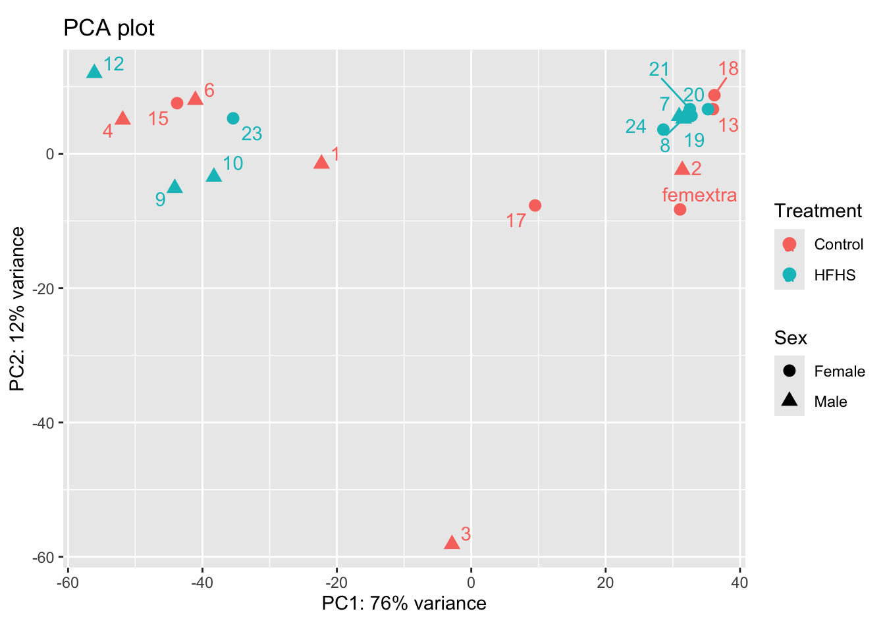
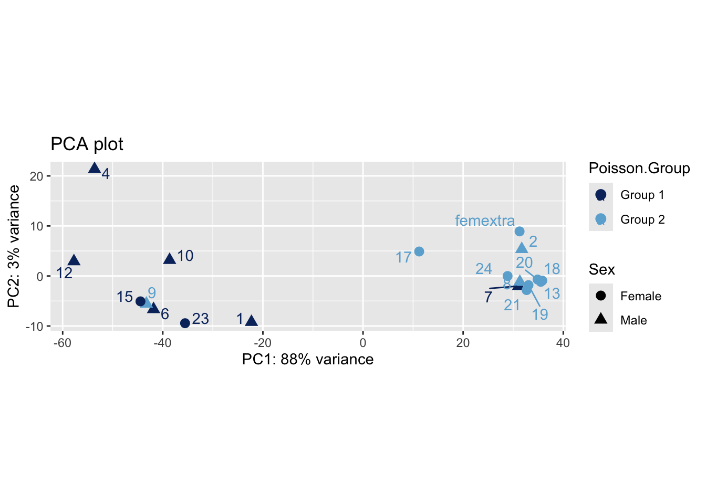

RNAseq Analysis
Holly Pinkney
2024-05-01
Last updated: 2024-05-02
Checks: 7 0
Knit directory: 240501_LMN_RNAseq/
This reproducible R Markdown analysis was created with workflowr (version 1.7.1). The Checks tab describes the reproducibility checks that were applied when the results were created. The Past versions tab lists the development history.
Great! Since the R Markdown file has been committed to the Git repository, you know the exact version of the code that produced these results.
Great job! The global environment was empty. Objects defined in the global environment can affect the analysis in your R Markdown file in unknown ways. For reproduciblity it’s best to always run the code in an empty environment.
The command set.seed(20240501) was run prior to running
the code in the R Markdown file. Setting a seed ensures that any results
that rely on randomness, e.g. subsampling or permutations, are
reproducible.
Great job! Recording the operating system, R version, and package versions is critical for reproducibility.
Nice! There were no cached chunks for this analysis, so you can be confident that you successfully produced the results during this run.
Great job! Using relative paths to the files within your workflowr project makes it easier to run your code on other machines.
Great! You are using Git for version control. Tracking code development and connecting the code version to the results is critical for reproducibility.
The results in this page were generated with repository version 125b1f3. See the Past versions tab to see a history of the changes made to the R Markdown and HTML files.
Note that you need to be careful to ensure that all relevant files for
the analysis have been committed to Git prior to generating the results
(you can use wflow_publish or
wflow_git_commit). workflowr only checks the R Markdown
file, but you know if there are other scripts or data files that it
depends on. Below is the status of the Git repository when the results
were generated:
Ignored files:
Ignored: .DS_Store
Ignored: .Rhistory
Ignored: .Rproj.user/
Untracked files:
Untracked: code/STAR.sh
Untracked: code/cutadapt.sh
Untracked: code/fastqc.sh
Untracked: data/01_trimmed_S250076152_L01_1_ReadsPerGene.out.tab
Untracked: data/02_trimmed_S250076152_L01_2_ReadsPerGene.out.tab
Untracked: data/03_trimmed_S250076152_L01_3_ReadsPerGene.out.tab
Untracked: data/04_trimmed_S250076152_L01_4_ReadsPerGene.out.tab
Untracked: data/05_trimmed_S250076152_L01_6_ReadsPerGene.out.tab
Untracked: data/06_trimmed_S250076152_L01_7_ReadsPerGene.out.tab
Untracked: data/07_trimmed_S250076152_L01_8_ReadsPerGene.out.tab
Untracked: data/08_trimmed_S250076152_L01_9_ReadsPerGene.out.tab
Untracked: data/09_trimmed_S250076152_L01_10_ReadsPerGene.out.tab
Untracked: data/10_trimmed_S250076152_L01_12_ReadsPerGene.out.tab
Untracked: data/11_trimmed_S250076152_L01_13_ReadsPerGene.out.tab
Untracked: data/12_trimmed_S250076152_L01_15_ReadsPerGene.out.tab
Untracked: data/13_trimmed_S250076152_L01_17_ReadsPerGene.out.tab
Untracked: data/14_trimmed_S250076152_L01_18_ReadsPerGene.out.tab
Untracked: data/15_trimmed_S250076152_L01_19_ReadsPerGene.out.tab
Untracked: data/16_trimmed_S250076152_L01_20_ReadsPerGene.out.tab
Untracked: data/17_trimmed_S250076152_L01_21_ReadsPerGene.out.tab
Untracked: data/18_trimmed_S250076152_L01_23_ReadsPerGene.out.tab
Untracked: data/19_trimmed_S250076152_L01_24_ReadsPerGene.out.tab
Untracked: data/20_trimmed_S250076152_L01_Femextra_ReadsPerGene.out.tab
Untracked: data/Sample ID_8 week offspring beta-cells_mRNA-seq.xlsx
Untracked: data/gencode.vM34.annotation.gtf
Untracked: data/sample_sheet.csv
Untracked: output/Poisson_groups_DEGenes_EdgeR.csv
Untracked: output/control_genes_limma.csv
Untracked: output/female_HFHS_vs_Control_DESeq2.csv
Untracked: output/female_HFHS_vs_Control_EdgeR.csv
Untracked: output/female_filt_genes_HFHS_vs_Control_DESeq.csv
Untracked: output/female_genes_HFHS_vs_Control.csv
Untracked: output/female_genes_limma.csv
Untracked: output/male_HFHS_vs_Control_DESeq2.csv
Untracked: output/male_HFHS_vs_Control_EdgeR.csv
Untracked: output/male_filt_genes_HFHS_vs_Control_DESeq.csv
Untracked: output/male_genes_HFHS_vs_Control.csv
Untracked: output/male_genes_limma.csv
Untracked: output/sanity_check_M.Control_vs_F.Control_DESeq2.csv
Untracked: output/sanity_check_M.Control_vs_F.Control_EdgeR.csv
Unstaged changes:
Modified: analysis/_site.yml
Note that any generated files, e.g. HTML, png, CSS, etc., are not included in this status report because it is ok for generated content to have uncommitted changes.
These are the previous versions of the repository in which changes were
made to the R Markdown (analysis/RNAseq_analysis.Rmd) and
HTML (docs/RNAseq_analysis.html) files. If you’ve
configured a remote Git repository (see ?wflow_git_remote),
click on the hyperlinks in the table below to view the files as they
were in that past version.
| File | Version | Author | Date | Message |
|---|---|---|---|---|
| Rmd | 125b1f3 | Holly Pinkney | 2024-05-02 | wflow_publish(files = "analysis/RNAseq_analysis.Rmd") |
| html | 1022be3 | Holly Pinkney | 2024-05-02 | Build site. |
| Rmd | 92b3821 | Holly Pinkney | 2024-05-02 | wflow_publish(files = "analysis/RNAseq_analysis.Rmd") |
Load packages
library(DESeq2)
library(edgeR)
library(limma)
library(systemPipeR)
library(factoextra)
library(tidyverse)
library(gplots)
library(rtracklayer)
library(ggrepel)
library(PoiClaClu)
library(pheatmap)
library(RColorBrewer)Setup
Load in the sample sheet and counts files, convert the counts files to a matrix
1. Sample sheet
This is based on the excel spreadsheet provided by Lisa. It also has some extra information which is used later in the analysis.
sample_sheet <- read.csv("data/sample_sheet.csv")
sample_sheet[1] <- NULL
names(sample_sheet)[3] <- "Treatment"
names(sample_sheet)[1] <- "LibraryID"
#ensure the main comparisons are factors
sample_sheet$Sex <- factor(sample_sheet$Sex)
sample_sheet$Treatment <- factor(sample_sheet$Treatment)2. Make counts matrix
This uses counts outputs (.tab files) produced by STAR aligner using
--quantMode GeneCounts. It is comparable to counts files
produced by HTseq count.
# Get the counts files
fileList <- list.files( path = "data/", pattern = "*ReadsPerGene.out.tab$", full.names = TRUE )
# read in the table but skip the first 4 metadata lines
counts.files <- lapply( fileList, read.table, skip = 4 )
#grab the second column of the dataframe (unstranded counts)
counts <- as.data.frame( sapply( counts.files, function(x) x[ , 2 ] ) )
#create colnames for the counts matrix from the fileList:
#removing the long unnecessary strings and replacing them with nothing
fileList <- gsub( "[_]ReadsPerGene[.]out[.]tab", "", fileList )
fileList <- gsub( "data[/][/]", "", fileList )
# setting the colNames
colnames(counts) <- fileList
#add in the gene names as rownames (they are in the same order across all samples)
row.names(counts) <- counts.files[[1]]$V1Visualisation of data
# Get annotation info
gtf <- rtracklayer::import('data/gencode.vM34.annotation.gtf')
gtf_df = as.data.frame(gtf)
gtf_df <- gtf_df %>% dplyr::select(gene_id, gene_name, seqnames)
gtf_df <- unique(gtf_df)
#make DEseq object to assist with viewing the data
dds <- DESeqDataSetFromMatrix(countData = counts,
colData = sample_sheet,
design = ~ 0+Group) # Each sex has an associated treatment variable - see "Group" column in sample sheetWarning in DESeqDataSet(se, design = design, ignoreRank): some variables in
design formula are characters, converting to factors#pre-filtering genes with less than 10 counts
nrow(dds)[1] 57126smallestGroupSize <- 5 # number of samples in group
keep <- rowSums(counts(dds) >= 10) >= smallestGroupSize
dds <- dds[keep,]
nrow(dds) # this reduced the dataset from 57k genes to only 15k genes. [1] 15170# normalisation
vst <- vst(dds, blind = F)Pre-filtering steps reducted the genes to look at from 57k genes to only 15k genes. The genes were removed if they did not have 10 counts in at least 5 samples (the size of the sample group). A standard vst normalisation step is also performed, but this is just for visualising the data (DEseq runs this within the algorithm so will still feed it raw counts directly, EdgeR and Limma have their own recommended normalisation process).
Standard visualisation steps:
1. Relative log expression
This is used to look at overall differences in counts between the samples, which might indicate batch effects
# RLE plot
logEst <- rlog(dds)
median_counts <- apply(assay(logEst), 2, median) #gets the median counts per sample (i.e. column - specified as "2")
rld_norm <- assay(logEst) - median_counts
boxplot(rld_norm, las = 2)
| Version | Author | Date |
|---|---|---|
| 1022be3 | Holly Pinkney | 2024-05-02 |
The RLE plot looks good, there don’t appear to be any batch effects
2. Elbow plot
An elbow plot is used to show the variation captured by each PC.
# look at variability captured across PCs
pca <- prcomp(t(assay(vst)))
prop_var <- pca$sdev^2 / sum(pca$sdev^2)
plot(prop_var, type = "b", xlab = "PC", ylab = "Proportion of Variance")
| Version | Author | Date |
|---|---|---|
| 1022be3 | Holly Pinkney | 2024-05-02 |
Looks as I would expect, with most of the variance in the data captured by the first 5 PCs.
3. PCA
The PCA plot is used to look similarity between samples. Based on this experiment, we would expect to see differences between males and females and would hope to see differences between treatment groups (HFHS dam and Control dam)
# plot PCA
pcaData <- plotPCA(vst, intgroup = c("Treatment", "Sex"), returnData = TRUE)using ntop=500 top features by variance#sort out the labels - use RegEx to extract the digits that are after an underscore and before _ReadsPerGene
pcaData <- pcaData %>%
mutate(LibID = str_extract(name, "(?<=_)(\\d+)$" ))
pcaData$LibID <- ifelse(is.na(pcaData$LibID), "femextra", pcaData$LibID)
percentVar <- round(100 * attr(pcaData, "percentVar"))
ggplot(pcaData, aes(x = PC1, y = PC2, color = Treatment, shape = Sex)) +
geom_point(size =3) +
geom_text_repel(aes(label=LibID), max.overlaps = 40)+
xlab(paste0("PC1: ", percentVar[1], "% variance")) +
ylab(paste0("PC2: ", percentVar[2], "% variance")) +
coord_fixed() +
ggtitle("PCA plot") 
| Version | Author | Date |
|---|---|---|
| 1022be3 | Holly Pinkney | 2024-05-02 |
- The data aren’t separating super well by treatment on the PCA plot.
- Sample 3 appears to be an outlier
- The samples are separating by something, but if its sex dependent there are a few outliers to that as well - have the samples been mislabeled?
- Can check this by investigating the expression of X and Y chromosome genes. The Y chromosome expression will be ONLY in males, and high X will be females but keep in mind males will also have an X chromosome and therefore some degree of expression.
Extra visualisation steps:
Sex determination
This is to check how well the X and Y gene expression matches with labelled sex.
#X or Y linked gene expression (to confirm sex of mice) (used normalised values)
chrX_genes <- subset(gtf_df, seqnames %in% "chrX")
chrY_genes <- subset(gtf_df, seqnames %in% "chrY")
dds_filteredX <- vst[rownames(vst) %in% chrX_genes$gene_id, ]
counts_X <- t(assay(dds_filteredX))
average_exprX <- rowMeans(counts_X)
median_exprX <- rowMedians(counts_X)
dds_filteredY <- vst[rownames(vst) %in% chrY_genes$gene_id, ]
counts_Y <- t(assay(dds_filteredY))
average_exprY <- rowMeans(counts_Y)
median_exprY <- rowMedians(counts_Y)
plot_data <- data.frame(average_exprX, average_exprY, Sex = sample_sheet$Sex, LibID = sample_sheet$LibraryID)
ggplot(plot_data, aes(x = average_exprX, y = average_exprY, shape = Sex)) +
geom_point(size = 3) +
labs(x = "Average normalised expression, X chromosome genes", y = "Average normalised expression, Y chromosome genes") +
geom_text_repel(aes(label=LibID), max.overlaps = 40)+
theme_minimal() +
geom_vline(xintercept = c(6.9, 6.75)) +
geom_hline(yintercept = c(6, 4))
| Version | Author | Date |
|---|---|---|
| 1022be3 | Holly Pinkney | 2024-05-02 |
- Most samples match well to their assigned sex, but some are a bit unclear. The samples inside the top left corner are confidently male, the samples inside the bottom right are confidently female, the others don’t have enough of a clear expression pattern to go one way or another.
- Sample 15 appears likely mislabeled.
- Alternatively, the separation line could be on a diagonal from the bottom left corner up to the top right, which would separate all samples, leaving only sample 15 as the obvious problem.
Differential expression
Will test the data using three different methods (DESeq2, EdgeR and limma), identifying differentially expressed genes from each and looking at the overlap between them. ## DESeq2
- DESeq2 uses a negative binomial distribution to model the count data, and does not assume genes are differentially expressed.
- It uses a generalised linear model (GLM) to statistically assess differential expression.
- All results are sorted by adjusted p-value.
# Run Deseq
dds <- DESeq(dds)estimating size factorsestimating dispersionsgene-wise dispersion estimatesmean-dispersion relationshipfinal dispersion estimatesfitting model and testingresultsNames(dds)[1] "GroupFemale.Control" "GroupFemale.HFHS" "GroupMale.Control"
[4] "GroupMale.HFHS" # Get the results for males
male_res <- DESeq2::results(dds, c("Group", "Male.HFHS", "Male.Control"))
male_res <- na.omit(male_res)
male_res <- male_res[order(male_res$padj),]
summary(male_res)
out of 15144 with nonzero total read count
adjusted p-value < 0.1
LFC > 0 (up) : 1, 0.0066%
LFC < 0 (down) : 4, 0.026%
outliers [1] : 0, 0%
low counts [2] : 0, 0%
(mean count < 2)
[1] see 'cooksCutoff' argument of ?results
[2] see 'independentFiltering' argument of ?resultsmale_res_outs <- rownames_to_column(as.data.frame(male_res), var = "gene_id")
male_res_outs <- merge(male_res_outs, gtf_df, by = "gene_id", all.x = TRUE)
male_res_outs <- male_res_outs[order(male_res_outs$padj), ]
head(male_res_outs) gene_id baseMean log2FoldChange lfcSE stat
65 ENSMUSG00000000530.17 45.58601 -5.028156 1.0913049 -4.607471
1861 ENSMUSG00000020357.4 36.09737 -6.951714 1.5249967 -4.558511
3345 ENSMUSG00000024421.17 14.93355 -5.771963 1.2709315 -4.541522
4668 ENSMUSG00000027797.16 25.32360 2.072039 0.4571223 4.532790
7900 ENSMUSG00000037754.14 15.29509 -5.516006 1.2932172 -4.265336
4324 ENSMUSG00000026921.21 60.03005 -4.155105 1.0486056 -3.962505
pvalue padj gene_name seqnames
65 4.075965e-06 0.02203814 Acvrl1 chr15
1861 5.151768e-06 0.02203814 Flt4 chr11
3345 5.584966e-06 0.02203814 Lama3 chr18
4668 5.820956e-06 0.02203814 Dclk1 chr3
7900 1.996017e-05 0.06045536 Ppp1r16b chr2
4324 7.416732e-05 0.16045570 Egfl7 chr2#Get the results for females
female_res <- DESeq2::results(dds, c("Group", "Female.HFHS", "Female.Control"))
female_res <- na.omit(female_res)
female_res <- female_res[order(female_res$padj),]
summary(female_res)
out of 15144 with nonzero total read count
adjusted p-value < 0.1
LFC > 0 (up) : 0, 0%
LFC < 0 (down) : 1, 0.0066%
outliers [1] : 0, 0%
low counts [2] : 0, 0%
(mean count < 2)
[1] see 'cooksCutoff' argument of ?results
[2] see 'independentFiltering' argument of ?resultsfemale_res_outs <- rownames_to_column(as.data.frame(female_res), var = "gene_id")
female_res_outs <- merge(female_res_outs, gtf_df, by = "gene_id", all.x = TRUE)
female_res_outs <- female_res_outs[order(female_res_outs$padj), ]
head(female_res_outs) gene_id baseMean log2FoldChange lfcSE stat
8350 ENSMUSG00000039278.11 283.076031 -5.52176210 1.0267029 -5.3781501
1 ENSMUSG00000000001.5 863.134444 0.06304212 0.6152529 0.1024654
2 ENSMUSG00000000028.16 18.019627 -0.06688485 0.4415509 -0.1514771
3 ENSMUSG00000000037.18 4.751364 -0.16285554 0.7099296 -0.2293967
4 ENSMUSG00000000056.8 73.253615 -0.55834548 0.5440252 -1.0263228
5 ENSMUSG00000000058.7 13.184263 -0.78255254 1.0691617 -0.7319309
pvalue padj gene_name seqnames
8350 7.525508e-08 0.001139663 Pcsk1n chrX
1 9.183873e-01 0.999995772 Gnai3 chr3
2 8.795994e-01 0.999995772 Cdc45 chr16
3 8.185606e-01 0.999995772 Scml2 chrX
4 3.047395e-01 0.999995772 Narf chr11
5 4.642107e-01 0.999995772 Cav2 chr6# Get the results for controls (sanity check)
control_res <- DESeq2::results(dds, c("Group", "Male.Control", "Female.Control"))
control_res <- na.omit(control_res)
control_res <- control_res[order(control_res$padj),]
summary(control_res)
out of 15144 with nonzero total read count
adjusted p-value < 0.1
LFC > 0 (up) : 0, 0%
LFC < 0 (down) : 0, 0%
outliers [1] : 0, 0%
low counts [2] : 0, 0%
(mean count < 2)
[1] see 'cooksCutoff' argument of ?results
[2] see 'independentFiltering' argument of ?resultscontrol_res_outs <- rownames_to_column(as.data.frame(control_res), var = "gene_id")
control_res_outs <- merge(control_res_outs, gtf_df, by = "gene_id", all.x = TRUE)
control_res_outs <- control_res_outs[order(control_res_outs$padj), ]
head(control_res_outs) gene_id baseMean log2FoldChange lfcSE stat
4324 ENSMUSG00000026921.21 60.03005 4.618556 1.0316533 4.476849
4537 ENSMUSG00000027435.9 126.39751 4.416710 1.0373595 4.257647
4985 ENSMUSG00000028517.9 74.08955 4.144286 0.9948262 4.165839
65 ENSMUSG00000000530.17 45.58601 4.113436 1.0281035 4.000994
762 ENSMUSG00000006386.16 18.70097 3.498975 0.9594401 3.646893
1221 ENSMUSG00000015647.10 38.45961 3.528198 0.9851183 3.581497
pvalue padj gene_name seqnames
4324 7.575264e-06 0.1147198 Egfl7 chr2
4537 2.065897e-05 0.1564297 Cd93 chr2
4985 3.102101e-05 0.1565940 Plpp3 chr4
65 6.307692e-05 0.2388092 Acvrl1 chr15
762 2.654307e-04 0.2405078 Tek chr4
1221 3.416316e-04 0.2405078 Lama5 chr2# write out csvs for further investigation
write.csv(male_res_outs, file = "output/male_HFHS_vs_Control_DESeq2.csv")
write.csv(female_res_outs, file = "output/female_HFHS_vs_Control_DESeq2.csv")
write.csv(control_res_outs, file = "output/sanity_check_M.Control_vs_F.Control_DESeq2.csv")
# look at p-val distributions in genes that are expressed at a base mean greater than 1
par(mfrow=c(1,3))
hist(male_res$pvalue[male_res$baseMean > 1], breaks = 0:20/20, main="Male Res", xlab="P-value")
hist(female_res$pvalue[female_res$baseMean > 1], breaks = 0:20/20, main="Female Res", xlab="P-value")
hist(control_res$pvalue[control_res$baseMean > 1], breaks = 0:20/20, main="Control Res", xlab="P-value")
| Version | Author | Date |
|---|---|---|
| 1022be3 | Holly Pinkney | 2024-05-02 |
par(mfrow=c(1,1))- Noted very few significantly DE genes driving differences between both Male and Female HFHS & Control groups, also no significant differences for Male.Control vs Female.Control.
- Raw p-value distribution is pretty funky for all except the Control Res panel which looks more as we would expect (although the dropoff is not as steep as we would see usually).
- This observation corresponds to the PCA plot where data didn’t separate well.
EdgeR
- EdgeR also uses a negative binomial distribution to model the count data. It also does not assume any differentially expressed genes.
- Similar to limma, it takes an empirical Bayes approach to statistical assessment of differential expression.
- All results were sorted by adjusted p-value (“FDR”), however there were no significant genes, or variation in FDR adjusted p-value.
- Because of this, results have been sorted by non-adjusted p-value in case any interesting genes pop up, despite not having a significant FDR adjusted p-value
# set up EdgeR obect
y <- DGEList(counts = counts, group = sample_sheet$Group, samples = sample_sheet$LibraryID )
nrow(y)[1] 57126# set up the design
Group <- factor(paste(sample_sheet$Sex, sample_sheet$Treatment, sep = "."))
design <- model.matrix(~0+Group)
colnames(design) <- levels(Group)
# filter out genes using EdgeRs filter by expression method.
keep <- filterByExpr(y, design)
table(keep)keep
FALSE TRUE
42923 14203 y <- y[keep, , keep.lib.sizes = FALSE]
nrow(y) # EdgeR filtering is more stringent than DESeq[1] 14203# normalize for lib sizes
y <- normLibSizes(y)
# estimate dispersion
y <- estimateDisp(y, design = design, robust = TRUE)
y$common.dispersion[1] 0.3692801# Test for DE genes - QL methods account for gene-specific variation
fit <- glmQLFit(y, design = design, robust = TRUE)
head(fit$coefficients) Female.Control Female.HFHS Male.Control Male.HFHS
ENSMUSG00000051951.6 -11.782246 -12.084611 -12.991184 -12.567257
ENSMUSG00000102331.2 -13.192691 -12.855313 -12.288501 -12.735129
ENSMUSG00000033845.14 -10.937502 -11.035717 -10.923538 -11.012402
ENSMUSG00000025903.15 -10.580002 -10.357290 -10.811947 -10.706273
ENSMUSG00000033813.16 -9.779922 -9.984207 -10.071174 -10.541457
ENSMUSG00000033793.13 -9.235888 -9.227411 -9.497008 -9.733718# setting up the comparison groups
# compare Female HFHS to Female control and Male HFHS to Male control
F.HFHSvsControl <- makeContrasts(Female.HFHS-Female.Control, levels = design)
M.HFHSvsControl <- makeContrasts(Male.HFHS-Male.Control, levels = design)
M.ControlvsF.Control <- makeContrasts(Male.Control-Female.Control, levels = design)
F.res <- glmQLFTest(fit, contrast = F.HFHSvsControl)
edgeR_F.res <- topTags(F.res, n=Inf)
is.deF <- decideTestsDGE(F.res)
summary(is.deF) -1*Female.Control 1*Female.HFHS
Down 0
NotSig 14203
Up 0M.res <- glmQLFTest(fit, contrast = M.HFHSvsControl)
edgeR_M.res <- topTags(M.res, n= Inf)
is.deM <- decideTestsDGE(M.res)
summary(is.deM) -1*Male.Control 1*Male.HFHS
Down 0
NotSig 14203
Up 0Control.res <- glmQLFTest(fit, contrast = M.ControlvsF.Control)
edgeR_Control.res <- topTags(Control.res, n = Inf)
is.deCtrl <- decideTestsDGE(Control.res)
summary(is.deCtrl) -1*Female.Control 1*Male.Control
Down 0
NotSig 14203
Up 0edgeR_f.res_outs <- rownames_to_column(as.data.frame(edgeR_F.res), var = "gene_id")
edgeR_f.res_outs <- merge(edgeR_f.res_outs, gtf_df, by = "gene_id", all.x = TRUE)
edgeR_f.res_outs <- edgeR_f.res_outs[order(edgeR_f.res_outs$PValue), ]
head(edgeR_f.res_outs) gene_id logFC logCPM F PValue FDR
8093 ENSMUSG00000039278.11 -5.576804 5.053454 17.540324 0.0004599964 0.9997707
12590 ENSMUSG00000095098.3 -2.801285 2.749342 11.585175 0.0028420061 0.9997707
2918 ENSMUSG00000023031.9 -2.069017 1.272690 10.029528 0.0048831941 0.9997707
12632 ENSMUSG00000096768.10 -5.634671 3.830717 9.562504 0.0057826960 0.9997707
7199 ENSMUSG00000035890.10 -1.399450 3.779140 9.012422 0.0070868008 0.9997707
14159 ENSMUSG00000121606.1 -3.168114 4.332001 8.865209 0.0074892253 0.9997707
gene_name seqnames
8093 Pcsk1n chrX
12590 Ccdc85b chr19
2918 Cela1 chr15
12632 Erdr1y chrY
7199 Rnf126 chr10
14159 AKAP17A chrXedgeR_m.res_outs <- rownames_to_column(as.data.frame(edgeR_M.res), var = "gene_id")
edgeR_m.res_outs <- merge(edgeR_m.res_outs, gtf_df, by = "gene_id", all.x = TRUE)
edgeR_m.res_outs <- edgeR_m.res_outs[order(edgeR_m.res_outs$PValue), ]
head(edgeR_m.res_outs) gene_id logFC logCPM F PValue FDR
3230 ENSMUSG00000024421.17 -5.571388 0.1365437 17.55785 0.0004577605 0.9998677
4510 ENSMUSG00000027797.16 2.072677 1.6176213 16.98138 0.0005342094 0.9998677
62 ENSMUSG00000000530.17 -4.982166 1.8266540 15.56421 0.0008101776 0.9998677
7652 ENSMUSG00000037754.14 -5.236295 0.2343812 15.02862 0.0009502084 0.9998677
6120 ENSMUSG00000031879.15 -1.459937 3.5986224 14.07839 0.0012686151 0.9998677
8319 ENSMUSG00000040170.14 2.527277 2.1369350 13.60281 0.0014726010 0.9998677
gene_name seqnames
3230 Lama3 chr18
4510 Dclk1 chr3
62 Acvrl1 chr15
7652 Ppp1r16b chr2
6120 Ciao2b chr8
8319 Fmo2 chr1edgeR_Control.res_outs <- rownames_to_column(as.data.frame(edgeR_Control.res), var = "gene_id")
edgeR_Control.res_outs <- merge(edgeR_Control.res_outs, gtf_df, by = "gene_id", all.x = TRUE)
edgeR_Control.res_outs <- edgeR_Control.res_outs[order(edgeR_Control.res_outs$PValue), ]
head(edgeR_Control.res_outs) gene_id logFC logCPM F PValue FDR
4173 ENSMUSG00000026921.21 4.353317 2.3288721 13.65146 0.001450250 0.6825522
4811 ENSMUSG00000028517.9 3.880155 2.7100152 12.03889 0.002441277 0.6825522
5949 ENSMUSG00000031502.12 2.628102 6.1627073 11.84629 0.002603176 0.6825522
4382 ENSMUSG00000027435.9 4.102282 3.5413057 11.82698 0.002620056 0.6825522
12432 ENSMUSG00000090175.2 -5.757601 -0.3544042 12.43222 0.002843214 0.6825522
62 ENSMUSG00000000530.17 3.823289 1.8266540 11.49062 0.002934409 0.6825522
gene_name seqnames
4173 Egfl7 chr2
4811 Plpp3 chr4
5949 Col4a1 chr8
4382 Cd93 chr2
12432 Ugt1a9 chr1
62 Acvrl1 chr15write.csv(edgeR_m.res_outs, file = "output/male_HFHS_vs_Control_EdgeR.csv")
write.csv(edgeR_f.res_outs, file = "output/female_HFHS_vs_Control_EdgeR.csv")
write.csv(edgeR_Control.res_outs, file = "output/sanity_check_M.Control_vs_F.Control_EdgeR.csv")
# look at p-val distributions in genes that are expressed at a base mean greater than 1
par(mfrow=c(1,3))
hist(edgeR_M.res$table$PValue[edgeR_M.res$table$logCPM > 1], breaks = 0:20/20, main="Male Res", xlab="P-value")
hist(edgeR_F.res$table$PValue[edgeR_F.res$table$logCPM > 1], breaks = 0:20/20, main="Female Res", xlab="P-value")
hist(edgeR_Control.res$table$PValue[edgeR_Control.res$table$logCPM > 1], breaks = 0:20/20, main="Control Res", xlab="P-value")
| Version | Author | Date |
|---|---|---|
| 1022be3 | Holly Pinkney | 2024-05-02 |
par(mfrow=c(1,1))- Using EdgeR had very similar results to DEseq2, but found no significantly DE genes.
- P-value distribution follows a similar concerning trend for the HFHS vs Control comparison for both males and females, but looks more as we would expect for Male.Control vs Female.Control (although the dropoff is not as steep as it would be usually).
Limma
- Limma voom estimates the relationship between mean and variance in logCPM data, normalises it and then creates “precision weights” for each gene.
- It then takes an empirical Bayes approach to assessing differentially expressed genes (similar to EdgeR).
- All results were sorted by adjusted p-value (“FDR”), however there were no significant genes, or variation in FDR adjusted p-value.
- Because of this, results have been sorted by non-adjusted p-value in case any interesting genes pop up, despite not having a significant FDR adjusted p-value
# use same objects created with edgeR
dge <- DGEList(counts = counts, group = sample_sheet$Group, samples = sample_sheet$LibraryID )
# set up the design
Group <- factor(paste(sample_sheet$Sex, sample_sheet$Treatment, sep = "."))
design <- model.matrix(~0+Group)
colnames(design) <- levels(Group)
# filter out genes that have less than 10 counts in 5 or more groups
keep <- filterByExpr(dge, design)
dge <- dge[keep, , keep.lib.sizes = FALSE]
# use voom to determine differential expression
v <- voom(dge, design, plot = F)
fit.limma <- lmFit(v, design)
fit.limma <- eBayes(fit.limma)
# contrasts (exactly the same as for edgeR)
F.HFHSvsControl <- makeContrasts(Female.HFHS-Female.Control, levels = design)
M.HFHSvsControl <- makeContrasts(Male.HFHS-Male.Control, levels = design)
M.ControlvsF.Control <- makeContrasts(Male.Control-Female.Control, levels = design)
f.fit <- contrasts.fit(fit.limma, contrasts = F.HFHSvsControl)
f.fit <- eBayes(f.fit, trend = TRUE)
summary(decideTests(f.fit, method="global", lfc = 2, p.value = 0.05, adjust.method = "fdr")) Female.HFHS - Female.Control
Down 0
NotSig 14203
Up 0m.fit <- contrasts.fit(fit.limma, contrasts = M.HFHSvsControl)
m.fit <- eBayes(m.fit, trend = TRUE)
summary(decideTests(m.fit, method="global", lfc = 2, p.value = 0.05, adjust.method = "fdr")) Male.HFHS - Male.Control
Down 0
NotSig 14203
Up 0ctrl.fit <- contrasts.fit(fit.limma, contrasts = M.ControlvsF.Control)
ctrl.fit <- eBayes(ctrl.fit, trend = TRUE)
summary(decideTests(ctrl.fit, method = "global", lfc = 2, p.value = 0.05, adjust.method = "fdr")) Male.Control - Female.Control
Down 0
NotSig 14203
Up 0topGenes_female_limma <- topTable(f.fit, number = Inf, sort.by = "P")
topGenes_male_limma <- topTable(m.fit, number = Inf, sort.by = "P")
topGenes_control_limma <- topTable(ctrl.fit, number = Inf, sort.by = "P")
limma_f.res_outs <- rownames_to_column(as.data.frame(topGenes_female_limma), var = "gene_id")
limma_f.res_outs <- merge(limma_f.res_outs, gtf_df, by = "gene_id", all.x = TRUE)
limma_f.res_outs <- limma_f.res_outs[order(limma_f.res_outs$P.Value), ]
limma_m.res_outs <- rownames_to_column(as.data.frame(topGenes_male_limma), var = "gene_id")
limma_m.res_outs <- merge(limma_m.res_outs, gtf_df, by = "gene_id", all.x = TRUE)
limma_m.res_outs <- limma_m.res_outs[order(limma_m.res_outs$P.Value), ]
limma_ctrl.res_outs <- rownames_to_column(as.data.frame(topGenes_control_limma), var = "gene_id")
limma_ctrl.res_outs <- merge(limma_ctrl.res_outs, gtf_df, by = "gene_id", all.x = TRUE)
limma_ctrl.res_outs <- limma_ctrl.res_outs[order(limma_ctrl.res_outs$P.Value), ]
write.csv(limma_f.res_outs, file = "output/female_genes_limma.csv")
write.csv(limma_m.res_outs, file = "output/male_genes_limma.csv")
write.csv(limma_ctrl.res_outs, file = "output/control_genes_limma.csv")
# look at p-val distributions in genes that are expressed at a base mean greater than 1
par(mfrow=c(1,3))
hist(topGenes_male_limma$P.Value[topGenes_male_limma$AveExpr > 1], breaks = 0:20/20, main="Male Res", xlab="P-value")
hist(topGenes_female_limma$P.Value[topGenes_female_limma$AveExpr > 1], breaks = 0:20/20, main="Female Res", xlab="P-value")
hist(topGenes_control_limma$P.Value[topGenes_control_limma$AveExpr > 1], breaks = 0:20/20, main="Control Res", xlab="P-value")
| Version | Author | Date |
|---|---|---|
| 1022be3 | Holly Pinkney | 2024-05-02 |
par(mfrow=c(1,1))- Using limma, the control p-value distribution looks almost exactly as we would expect.
- However, there are still no differentially expressed genes identified.
Find the overlap between DESeq2, EdgeR and limma
This is not the overlap between differentially expressed genes, because there were none. It is the overlap between the top 1000 genes identified as variable. Unsurprisingly, DESeq2, which is less stringent, identified a bunch of genes not found by edgeR and limma, and limma and edgeR, which share similar methodology, found many genes in common.
setlist <- list(edgeR=edgeR_f.res_outs$gene_id[1:1000], DESeq2=female_res_outs$gene_id[1:1000], Limma=limma_f.res_outs$gene_id[1:1000])
vennset <- overLapper(setlist=setlist[1:3], type = "vennsets")
vennPlot(vennset, mymain = "overlap of top 100 identified genes")
| Version | Author | Date |
|---|---|---|
| 1022be3 | Holly Pinkney | 2024-05-02 |
Retest with outliers removed
Based on PCA, remove sample 3 from analysis and re-assess using DESeq2 (as it was the only method which was able to identify any DE genes)
# Filter out sample 3
outlier_sample <- which(colData(dds)$LibraryID=="3")
dds_filt <- dds[,-outlier_sample]
# normalise and view the PCA with it now removed
vst_filt <- vst(dds_filt, blind = F)
pcaFilt <- plotPCA(vst_filt, intgroup = c("Treatment", "Sex"), returnData = TRUE)using ntop=500 top features by variance#sort out the labels - use RegEx to extract the digits that are after the final underscore
pcaFilt <- pcaFilt %>%
mutate(LibID = str_extract(name, "(?<=_)(\\d+)$" ))
pcaFilt$LibID <- ifelse(is.na(pcaFilt$LibID), "femextra", pcaFilt$LibID)
percentVarFilt <- round(100 * attr(pcaFilt, "percentVar"))
ggplot(pcaFilt, aes(x = PC1, y = PC2, color = Treatment, shape = Sex)) +
geom_point(size =3) +
geom_text_repel(aes(label=LibID), max.overlaps = 40)+
xlab(paste0("PC1: ", percentVarFilt[1], "% variance")) +
ylab(paste0("PC2: ", percentVarFilt[2], "% variance")) +
coord_fixed() +
ggtitle("PCA plot")
| Version | Author | Date |
|---|---|---|
| 1022be3 | Holly Pinkney | 2024-05-02 |
# Run Deseq on the filtered object
dds_filt <- DESeq(dds_filt)using pre-existing size factorsestimating dispersionsfound already estimated dispersions, replacing thesegene-wise dispersion estimatesmean-dispersion relationshipfinal dispersion estimatesfitting model and testingresultsNames(dds_filt)[1] "GroupFemale.Control" "GroupFemale.HFHS" "GroupMale.Control"
[4] "GroupMale.HFHS" # Get the results for males
male_res_filt <- DESeq2::results(dds_filt, contrast=c("Group", "Male.HFHS", "Male.Control"))
male_res_filt <- na.omit(male_res_filt)
male_res_filt <- male_res_filt[order(male_res_filt$padj),]
summary(male_res_filt)
out of 15169 with nonzero total read count
adjusted p-value < 0.1
LFC > 0 (up) : 0, 0%
LFC < 0 (down) : 0, 0%
outliers [1] : 0, 0%
low counts [2] : 0, 0%
(mean count < 2)
[1] see 'cooksCutoff' argument of ?results
[2] see 'independentFiltering' argument of ?resultsmale_res_filt_outs <- rownames_to_column(as.data.frame(male_res_filt), var = "gene_id")
male_res_filt_outs <- merge(male_res_filt_outs, gtf_df, by = "gene_id", all.x = TRUE)
male_res_filt_outs <- male_res_filt_outs[order(male_res_filt_outs$padj), ] # while there aren't significant genes, there is variation in padj.
head(male_res_filt_outs) gene_id baseMean log2FoldChange lfcSE stat
4680 ENSMUSG00000027797.16 26.656426 1.9896406 0.4577563 4.346506
4297 ENSMUSG00000026832.13 6.023036 2.9558384 0.7942363 3.721611
6543 ENSMUSG00000032332.18 26.251035 5.2651668 1.3908104 3.785683
8601 ENSMUSG00000040170.14 37.796326 2.3717810 0.6374308 3.720844
9460 ENSMUSG00000044674.7 14.120428 2.1739925 0.5556493 3.912526
129 ENSMUSG00000001089.15 233.046087 0.6292129 0.1893584 3.322868
pvalue padj gene_name seqnames
4680 1.383230e-05 0.2098221 Dclk1 chr3
4297 1.979559e-04 0.6023844 Cytip chr2
6543 1.532872e-04 0.6023844 Col12a1 chr9
8601 1.985577e-04 0.6023844 Fmo2 chr1
9460 9.133562e-05 0.6023844 Fzd1 chr5
129 8.909713e-04 0.9899436 Luzp1 chr4#Get the results for females
female_res_filt <- DESeq2::results(dds_filt, contrast=c("Group", "Female.HFHS", "Female.Control"))
female_res_filt <- na.omit(female_res_filt)
female_res_filt <- female_res_filt[order(female_res_filt$padj),]
summary(female_res_filt)
out of 15169 with nonzero total read count
adjusted p-value < 0.1
LFC > 0 (up) : 0, 0%
LFC < 0 (down) : 1, 0.0066%
outliers [1] : 0, 0%
low counts [2] : 0, 0%
(mean count < 2)
[1] see 'cooksCutoff' argument of ?results
[2] see 'independentFiltering' argument of ?resultsfemale_res_filt_outs <- rownames_to_column(as.data.frame(female_res_filt), var = "gene_id")
female_res_filt_outs <- merge(female_res_filt_outs, gtf_df, by = "gene_id", all.x = TRUE)
female_res_filt_outs <- female_res_filt_outs[order(female_res_filt_outs$padj), ] # while there aren't significant genes, there is variation in padj.
head(female_res_filt_outs) gene_id baseMean log2FoldChange lfcSE stat
8369 ENSMUSG00000039278.11 292.223065 -5.52150146 1.0424015 -5.2969048
1 ENSMUSG00000000001.5 865.686235 0.06304485 0.6267924 0.1005833
2 ENSMUSG00000000028.16 18.968029 -0.06677648 0.4384538 -0.1522999
3 ENSMUSG00000000037.18 4.478554 -0.16345725 0.7400762 -0.2208654
4 ENSMUSG00000000056.8 68.220072 -0.55840204 0.5325284 -1.0485863
5 ENSMUSG00000000058.7 9.172232 -0.78277846 1.0575177 -0.7402037
pvalue padj gene_name seqnames
8369 1.177821e-07 0.001786636 Pcsk1n chrX
1 9.198813e-01 0.999930222 Gnai3 chr3
2 8.789504e-01 0.999930222 Cdc45 chr16
3 8.251972e-01 0.999930222 Scml2 chrX
4 2.943685e-01 0.999930222 Narf chr11
5 4.591764e-01 0.999930222 Cav2 chr6# write out csvs
write.csv(male_res_filt_outs, file = "output/male_filt_genes_HFHS_vs_Control_DESeq.csv")
write.csv(female_res_filt_outs, file = "output/female_filt_genes_HFHS_vs_Control_DESeq.csv")- This produced very similar results to the first analysis.
What is driving the PCA groups identified?
First, determine the degree of variation between the samples by calculating poisson distances, then calculate differentially expressed genes between groups.
Poisson distances
Using raw counts to calculate poisson distances, but filtered for low expression.
# further check variability in the samples based on poisson distance
poisd <- PoissonDistance(t(counts(dds_filt)))
samplePoisDistMatrix <- as.matrix( poisd$dd )
#colnames(samplePoisDistMatrix) <- NULL
colors <- colorRampPalette( rev(brewer.pal(9, "Blues")) )(255)
pheatmap(samplePoisDistMatrix,
clustering_distance_rows = poisd$dd,
clustering_distance_cols = poisd$dd,
col = colors,main = "Poisson distances",
labels_row = sample_sheet$Group,
labels_col = sample_sheet$LibraryID)
| Version | Author | Date |
|---|---|---|
| 1022be3 | Holly Pinkney | 2024-05-02 |
- This essentially shows what we saw on the PCA but a little bit more fine grained. Based on poisson distances between samples (library ID on x axis, sample group on y axis), there are two clear groups.
- When we group the data by whether it is in the first cluster at the top left or second cluster at the bottom right, we can view it on the PCA:
#plot PCA based on poisson group
sample_sheet$Poisson.Group <- factor(sample_sheet$Poisson.Group)
pcaFilt.poisson <- plotPCA(vst_filt, intgroup = c("Sex", "Treatment", "Poisson.Group"), returnData = TRUE)using ntop=500 top features by variance#sort out the labels - use RegEx to extract the digits that are after the final underscore
pcaFilt.poisson <- pcaFilt.poisson %>%
mutate(LibID = str_extract(name, "(?<=_)(\\d+)$" ))
pcaFilt.poisson$LibID <- ifelse(is.na(pcaFilt$LibID), "femextra", pcaFilt$LibID)
percentVarFilt.poisson <- round(100 * attr(pcaFilt.poisson, "percentVar"))
poisson_pca_cols <- colorRampPalette( rev(brewer.pal(9, "Blues")) )(3)
ggplot(pcaFilt.poisson, aes(x = PC1, y = PC2, shape = Sex, color = Poisson.Group)) +
geom_point(size =3) +
geom_text_repel(aes(label=LibID), max.overlaps = 40)+
scale_color_manual(values = poisson_pca_cols)+
xlab(paste0("PC1: ", percentVarFilt[1], "% variance")) +
ylab(paste0("PC2: ", percentVarFilt[2], "% variance")) +
coord_fixed() +
ggtitle("PCA plot") 
| Version | Author | Date |
|---|---|---|
| 1022be3 | Holly Pinkney | 2024-05-02 |
- The poisson groups don’t match perfectly to the PCA plot, but they’re pretty close.
- To figure out what is driving these differences we can test for DE genes and look at associated go terms
- Will use EdgeR to do this because it has an easy inbuilt tool
(
goana) for this purpose.
Run EdgeR on identified poisson groups
# set up edgeR object
y <- DGEList(counts = counts, group = sample_sheet$Poisson.Group, samples = sample_sheet$LibID )
# filter out low counts as before
keep <- filterByExpr(y)
y <- y[keep, , keep.lib.sizes = FALSE]
#filter out sample 3
outlier_sample <- which(rownames(y$samples)=="03_trimmed_S250076152_L01_3")
y_filt <- y[,-outlier_sample]
# normalize for lib sizes
y_filt <- normLibSizes(y_filt)
# estimate dispersion
y_filt <- estimateDisp(y_filt, robust = TRUE)Using classic mode.# Test for DE genes - QL methods account for gene-specific variation
fit <- glmQLFit(y_filt, robust = TRUE)
res <- glmQLFTest(fit)
is.de <- decideTestsDGE(res)
summary(is.de) y$samples$groupGroup 2
Down 3817
NotSig 4995
Up 4101# EdgeR results outs
res_outs <- rownames_to_column(as.data.frame(res), var = "gene_id")
res_outs <- merge(res_outs, gtf_df, by = "gene_id", all.x = TRUE)
res_outs <- res_outs[order(res_outs$PValue), ]
head(res_outs) gene_id logFC logCPM F PValue gene_name
7572 ENSMUSG00000038555.8 -1.826912 4.055629 73.01267 2.409784e-08 Reep2
289 ENSMUSG00000002379.8 -2.820498 5.279392 65.36687 6.022028e-08 Ndufa11
5089 ENSMUSG00000029551.14 -2.296329 2.371724 65.28161 6.086625e-08 Psmg3
4824 ENSMUSG00000028952.13 -2.013984 4.064273 65.18352 6.161881e-08 Zbtb48
2539 ENSMUSG00000022386.13 -2.208531 4.602698 60.08086 1.191719e-07 Trmu
1486 ENSMUSG00000019737.15 -2.070686 6.277480 59.83240 1.231927e-07 Syne4
seqnames
7572 chr18
289 chr17
5089 chr5
4824 chr4
2539 chr15
1486 chr7write.csv(res_outs, file = "output/Poisson_groups_DEGenes_EdgeR.csv")
# What differences are we actually testing? Look at go terms
entrez <- as.character(res_outs$gene_id)
go_results <- goana(entrez, species="Mm")
topGO(go_results, p.value = 0.05)[1] Term Ont N DE P.DE
<0 rows> (or 0-length row.names)# Not significant go terms:
topGO(go_results) Term
GO:0070060 'de novo' actin filament nucleation
GO:0051083 'de novo' cotranslational protein folding
GO:0001874 (1->3)-beta-D-glucan immune receptor activity
GO:0019171 (3R)-hydroxyacyl-[acyl-carrier-protein] dehydratase activity
GO:0008659 (3R)-hydroxymyristoyl-[acyl-carrier-protein] dehydratase activity
GO:0003947 (N-acetylneuraminyl)-galactosylglucosylceramide N-acetylgalactosaminyltransferase activity
GO:0051990 (R)-2-hydroxyglutarate dehydrogenase activity
GO:0047305 (R)-3-amino-2-methylpropionate-pyruvate transaminase activity
GO:0070626 (S)-2-(5-amino-1-(5-phospho-D-ribosyl)imidazole-4-carboxamido) succinate lyase (fumarate-forming) activity
GO:0047298 (S)-3-amino-2-methylpropionate transaminase activity
GO:0047777 (S)-citramalyl-CoA lyase activity
GO:0047323 [3-methyl-2-oxobutanoate dehydrogenase (acetyl-transferring)] kinase activity
GO:0004313 [acyl-carrier-protein] S-acetyltransferase activity
GO:0033871 [heparan sulfate]-glucosamine 3-sulfotransferase 2 activity
GO:0033872 [heparan sulfate]-glucosamine 3-sulfotransferase 3 activity
GO:0030586 [methionine synthase] reductase activity
GO:0102167 [protein]-3-O-(N-acetyl-D-glucosaminyl)-L-serine O-N-acetyl-alpha-D-glucosaminase activity
GO:0102571 [protein]-3-O-(N-acetyl-D-glucosaminyl)-L-serine/L-threonine O-N-acetyl-alpha-D-glucosaminase activity
GO:0102166 [protein]-3-O-(N-acetyl-D-glucosaminyl)-L-threonine O-N-acetyl-alpha-D-glucosaminase activity
GO:0036140 [protein]-asparagine 3-dioxygenase activity
Ont N DE P.DE
GO:0070060 BP 1 0 1
GO:0051083 BP 1 0 1
GO:0001874 MF 1 0 1
GO:0019171 MF 1 0 1
GO:0008659 MF 1 0 1
GO:0003947 MF 1 0 1
GO:0051990 MF 1 0 1
GO:0047305 MF 1 0 1
GO:0070626 MF 1 0 1
GO:0047298 MF 1 0 1
GO:0047777 MF 1 0 1
GO:0047323 MF 1 0 1
GO:0004313 MF 1 0 1
GO:0033871 MF 1 0 1
GO:0033872 MF 1 0 1
GO:0030586 MF 1 0 1
GO:0102167 MF 1 0 1
GO:0102571 MF 1 0 1
GO:0102166 MF 1 0 1
GO:0036140 MF 1 0 1- No statistically significant GO terms associated with DE genes between the two groups.
- Very likely testing noise
sessionInfo()R version 4.3.3 (2024-02-29)
Platform: aarch64-apple-darwin20 (64-bit)
Running under: macOS Sonoma 14.4.1
Matrix products: default
BLAS: /Library/Frameworks/R.framework/Versions/4.3-arm64/Resources/lib/libRblas.0.dylib
LAPACK: /Library/Frameworks/R.framework/Versions/4.3-arm64/Resources/lib/libRlapack.dylib; LAPACK version 3.11.0
locale:
[1] en_US.UTF-8/en_US.UTF-8/en_US.UTF-8/C/en_US.UTF-8/en_US.UTF-8
time zone: Australia/Adelaide
tzcode source: internal
attached base packages:
[1] stats4 stats graphics grDevices utils datasets methods
[8] base
other attached packages:
[1] RColorBrewer_1.1-3 pheatmap_1.0.12
[3] PoiClaClu_1.0.2.1 ggrepel_0.9.5
[5] rtracklayer_1.62.0 gplots_3.1.3.1
[7] lubridate_1.9.3 forcats_1.0.0
[9] stringr_1.5.1 dplyr_1.1.4
[11] purrr_1.0.2 readr_2.1.5
[13] tidyr_1.3.1 tibble_3.2.1
[15] tidyverse_2.0.0 factoextra_1.0.7
[17] ggplot2_3.5.1 systemPipeR_2.8.0
[19] ShortRead_1.60.0 GenomicAlignments_1.38.2
[21] BiocParallel_1.36.0 Rsamtools_2.18.0
[23] Biostrings_2.70.3 XVector_0.42.0
[25] edgeR_4.0.16 limma_3.58.1
[27] DESeq2_1.42.1 SummarizedExperiment_1.32.0
[29] Biobase_2.62.0 MatrixGenerics_1.14.0
[31] matrixStats_1.3.0 GenomicRanges_1.54.1
[33] GenomeInfoDb_1.38.8 IRanges_2.36.0
[35] S4Vectors_0.40.2 BiocGenerics_0.48.1
[37] workflowr_1.7.1
loaded via a namespace (and not attached):
[1] rstudioapi_0.16.0 jsonlite_1.8.8 magrittr_2.0.3
[4] farver_2.1.1 rmarkdown_2.26 fs_1.6.4
[7] BiocIO_1.12.0 zlibbioc_1.48.2 vctrs_0.6.5
[10] memoise_2.0.1 RCurl_1.98-1.14 htmltools_0.5.8.1
[13] S4Arrays_1.2.1 SparseArray_1.2.4 sass_0.4.9
[16] KernSmooth_2.23-22 bslib_0.7.0 htmlwidgets_1.6.4
[19] cachem_1.0.8 whisker_0.4.1 lifecycle_1.0.4
[22] pkgconfig_2.0.3 Matrix_1.6-5 R6_2.5.1
[25] fastmap_1.1.1 GenomeInfoDbData_1.2.11 digest_0.6.35
[28] colorspace_2.1-0 AnnotationDbi_1.64.1 ps_1.7.6
[31] rprojroot_2.0.4 RSQLite_2.3.6 hwriter_1.3.2.1
[34] labeling_0.4.3 org.Mm.eg.db_3.18.0 fansi_1.0.6
[37] timechange_0.3.0 httr_1.4.7 abind_1.4-5
[40] compiler_4.3.3 bit64_4.0.5 withr_3.0.0
[43] DBI_1.2.2 highr_0.10 DelayedArray_0.28.0
[46] rjson_0.2.21 gtools_3.9.5 caTools_1.18.2
[49] tools_4.3.3 httpuv_1.6.15 glue_1.7.0
[52] restfulr_0.0.15 callr_3.7.6 promises_1.3.0
[55] grid_4.3.3 getPass_0.2-4 generics_0.1.3
[58] gtable_0.3.5 tzdb_0.4.0 hms_1.1.3
[61] utf8_1.2.4 pillar_1.9.0 later_1.3.2
[64] splines_4.3.3 lattice_0.22-6 bit_4.0.5
[67] deldir_2.0-4 tidyselect_1.2.1 GO.db_3.18.0
[70] locfit_1.5-9.9 knitr_1.45 git2r_0.33.0
[73] xfun_0.43 statmod_1.5.0 stringi_1.8.3
[76] yaml_2.3.8 evaluate_0.23 codetools_0.2-20
[79] interp_1.1-6 cli_3.6.2 munsell_0.5.1
[82] processx_3.8.4 jquerylib_0.1.4 Rcpp_1.0.12
[85] png_0.1-8 XML_3.99-0.16.1 parallel_4.3.3
[88] blob_1.2.4 latticeExtra_0.6-30 jpeg_0.1-10
[91] bitops_1.0-7 scales_1.3.0 crayon_1.5.2
[94] rlang_1.1.3 KEGGREST_1.42.0